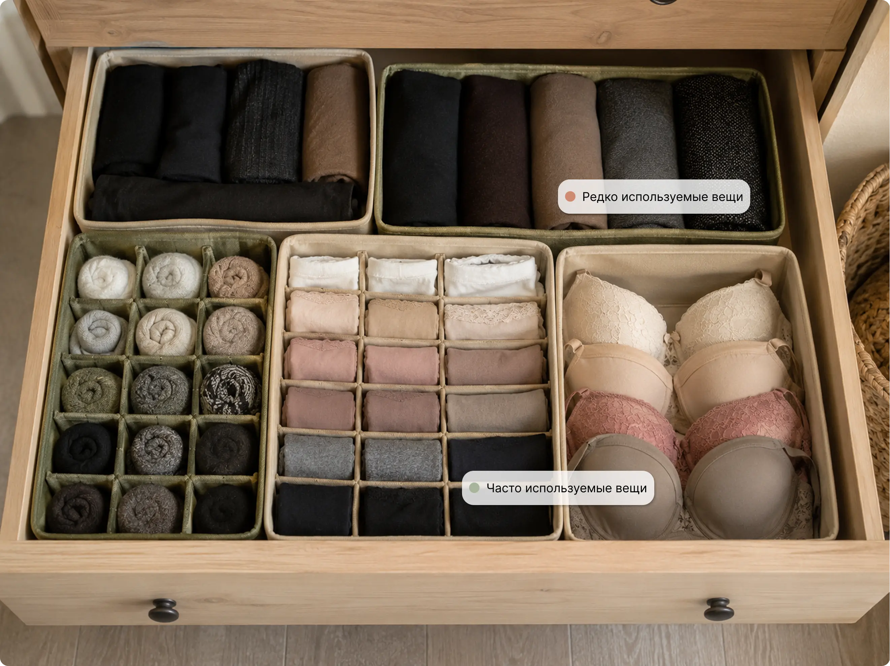

Комод легко разобрать один раз: достать вещи, сложить стопки, красиво разложить бельё и носки. Но через несколько дней всё часто возвращается обратно: носки смешиваются с колготками, бельё оказывается не там, где нужно, а после стирки вещи снова попадают в ящик «как получится».
Чаще всего проблема не в неаккуратности. Просто у ящика нет понятной схемы: что где лежит, почему именно там и как вернуть вещи на место без лишних усилий.
Хороший порядок в комоде — это не идеальная картинка после уборки, а ящик, которым удобно пользоваться каждый день.
01 — КатегорииСначала разберите вещи по категориям
Начните не с покупки органайзеров, а с содержимого. Достаньте всё из ящика и разложите вещи по группам:
- трусы;
- носки;
- бюстгальтеры и мягкие топы;
- колготки;
- майки и футболки;
- домашняя одежда;
- ремни, платки и мелкие аксессуары;
- вещи, которые давно не носились.
На этом этапе обычно становится понятно, почему порядок не держался. В одном ящике может оказаться слишком много разных вещей: часть нужна каждый день, часть — редко, а часть просто занимает место.
То, чем вы не пользуетесь регулярно, лучше убрать из основного ящика. Сезонный запас, лишние комплекты, старые носки и вещи не по размеру не должны мешать тому, что нужно каждый день.
02 — СоседствоРешите, что можно хранить вместе
Не все вещи удобно хранить в одном ящике. Разделите категории по принципу «дружат / мешают друг другу».
- бельё и носки;
- трусы и колготки;
- майки и домашние футболки;
- пижамы и ночные сорочки.
- бюстгальтеры и тяжёлая одежда;
- тонкие колготки и ремни;
- бельё и случайные аксессуары.
Такие вещи быстро цепляются, теряются или начинают мешать друг другу.
Если ящик небольшой, лучше отвести ему одну понятную задачу — например, хранение белья и носков. Один структурированный ящик в долгосрочной перспективе работает лучше, чем перегруженный ящик «для всего».
03 — РазмерыИзмерьте ящик перед покупкой органайзеров
Если вы хотите купить органайзер для белья в комод или разделители для ящиков, сначала измерьте внутреннее пространство. Нужны три размера:
- ширина ящика;
- глубина ящика;
- полезная высота до закрытия.
Важно измерять именно внутренние размеры, а не внешний размер комода.
Оставьте небольшой запас. Если всё стоит совсем впритык, пользоваться ящиком будет неудобно: тканевые стенки могут сминаться, блоки — цепляться друг за друга, а вещи — доставаться с усилием.
04 — РаскладкаПодберите способ хранения под каждую вещь
У разных вещей разная логика хранения.
Носки удобно хранить парами: свернуть в компактный рулон, сложить вместе или поставить в небольшие ячейки.
Трусы удобно складывать небольшими конвертами и ставить вертикально. Так видно сразу всё, и не нужно перебирать всю стопку.
Бюстгальтеры лучше хранить отдельно, без сильного сжатия. Им нужна более жёсткая зона, где вещи не теряют форму. Обратите внимание: на рынке много специализированных органайзеров для бюстгальтеров.
Колготки лучше держать в небольшой отдельной секции. Главное — не смешивать их с ремнями, молниями и вещами, которые могут зацепить ткань.
Майки и футболки удобно хранить вертикальными блоками — так легче брать и закладывать на место.
05 — ЗоныРазложите зоны по частоте использования
Самые нужные вещи лучше держать ближе к переднему краю ящика. Обычно это бельё, носки, базовые топы или майки.
То, что используется реже, можно убрать дальше: запасные колготки, сезонные носки, редкие комплекты, дополнительные аксессуары.
Простая схема может выглядеть так:
- ближе к переднему краю — бельё и носки;
- сбоку — колготки или аксессуары;
- в дальней части — запас или вещи, которые нужны реже;
- отдельно — бюстгальтеры и мягкие топы, если они есть в этом ящике.

Главное, чтобы у каждой категории было своё место. Тогда после стирки не нужно заново решать, куда всё положить.
06 — ОшибкиЧастые ошибки при организации комода
-
01
Купить органайзеры «на глаз»
На фото набор может выглядеть идеально, но дома не подойти по высоте, глубине или размеру секций.
-
02
Выбрать слишком мелкие ячейки
Много отделений не всегда значит удобно. Если вещи приходится утрамбовывать, порядок быстро начнёт раздражать.
-
03
Забыть про высоту ящика
Органайзер должен не просто помещаться, а позволять ящику нормально закрываться после заполнения.
-
04
Смешать слишком много разных категорий
Если в одной зоне лежат носки, бельё, ремни и колготки, они почти неизбежно перемешаются.
-
05
Заполнить ящик до предела
Небольшой запас места делает хранение удобнее: вещи легче достать, вернуть обратно и не помять.
Мы понимаем: всё это может звучать как красивая теория. Разделить вещи по категориям, измерить ящик, придумать зоны, подобрать органайзеры. Вроде бы логично.
Но в реальности вы смотрите на свой комод и думаете: «А как мне всё это разместить именно в моём ящике?»
07 — СервисКогда лучше не подбирать всё вручную
Для этого мы и придумали «Уместно».
Сервис помогает начать не с десятков карточек товаров, а с готовой схемы хранения. Вы указываете размеры ящика и вещи, которые хотите хранить, — а «Уместно» показывает, какие зоны нужны, что где разместить и как разложить вещи, чтобы ящиком было удобно пользоваться каждый день.
Так не нужно вручную прикидывать, сколько органайзеров поместится, что поставить рядом и останется ли место. Сначала появляется понятная схема, учитывающая реальные потребности хранения, — потом уже проще выбрать коробки, разделители или органайзеры под неё.
08 — После стиркиКак поддерживать порядок после стирки
Проверить, работает ли схема, проще всего после первой стирки. Если вы быстро понимаете, куда вернуть каждую вещь, значит, система удобная.
Чтобы порядок держался, не кладите новые категории «временно» поверх старых, не переполняйте секции и держите часто используемые вещи ближе. Если какая-то зона постоянно расползается, значит, ей не хватает места или она смешана с неподходящими вещами.
09 — ИтогЧто в итоге
Навести порядок в комоде — значит не просто аккуратно сложить вещи или купить красивые органайзеры. Комод становится удобным, когда у каждой вещи есть понятное место.
Хорошая схема хранения должна быть прежде всего функционально удобной, реализуемой и бытовой. Именно такая система держится не потому, что вы каждый день идеально поправляете ящик, — она становится привычным состоянием ящика.